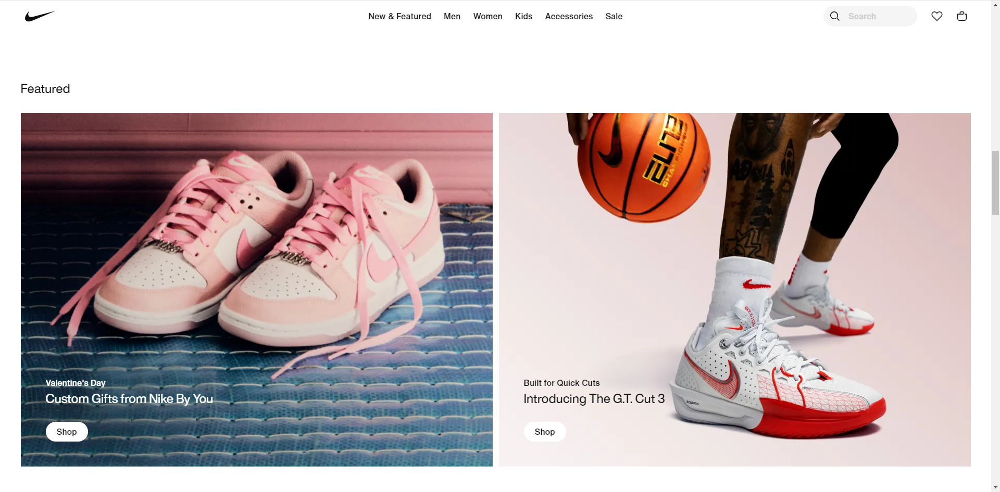

Design Principles Document
Jared Keh
White Space
This is an exmaple of white space and clean design:
Apple.com
Whitespace and clean design are particularly important considerations in the context of website design.
Whitespace can be used strategically to emphasize brand elements such as logos, taglines, and key messages.
Whitespace can enhance accessibility by providing clear separation between interactive elements.
Clean design principles, such as sufficient color contrast and text legibility, contribute to a more inclusive website.
Apple does a great job with the Whitespace and Clean Design on their website with the main page with the girl in the VR headset.
Apple has a clean design with the attraction of making the user experience easy and accessibile for those that use the website.
Rule of Thirds

This is an example of the Rule of Thirds:
Nike.com
The rule of thirds can also be applied to web design to create visually balanced and aesthetically pleasing layouts.
While the grid lines and intersections are not physically visible on a website, the concept remains the same.
Divide the webpage into three horizontal sections and three vertical columns.
Divide the main content area into thirds vertically and horizontally.
Nike has a good layout of the rule of thirds that make the design of their website be balanced and pleasing to the eye.
Alignment
This is an example of Alignment:
Typeform.com
Alignment is a crucial aspect of web design that involves positioning elements in a visually organized and cohesive manner.
Proper alignment contributes to a more readable, aesthetically pleasing, and user-friendly website.
Effective alignment is a fundamental principle of web design, contributing to a polished and user-friendly experience.
Designers often use a combination of alignment techniques to create visually appealing and organized layouts.
Typeform has a good example of alignment on their website with in their header they have the company name on the left and the sign up in on the right side.